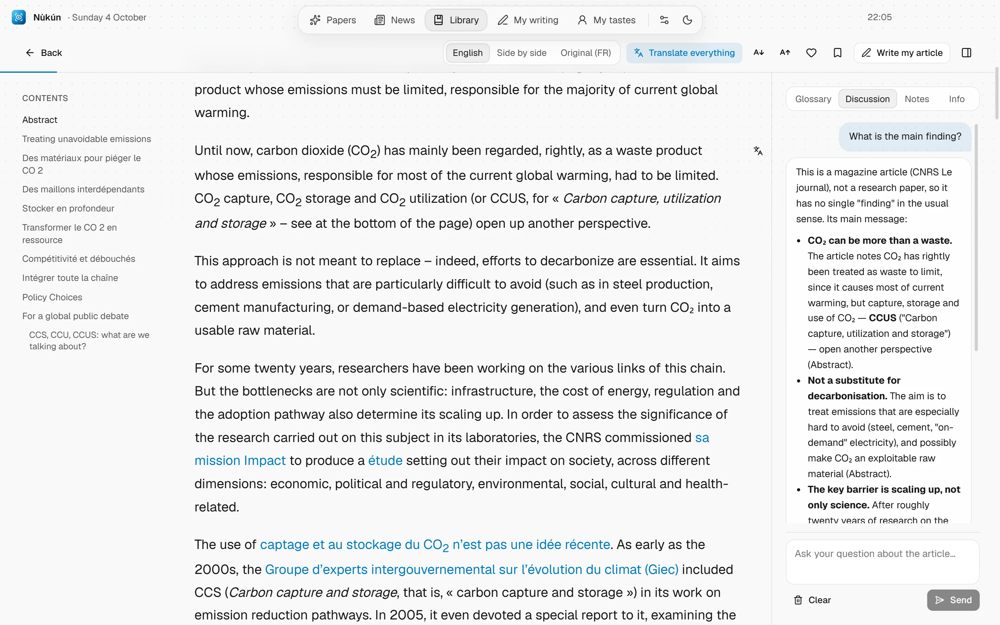

The full paper, translated and explained
The full text appears translated, figures and tables included. Select a passage to have it explained simply, or ask the AI your questions: it answers from the paper itself.
- Translation, original, or both side by side
- Explanations of passages and figures
- A chat about the paper, and reading notes
